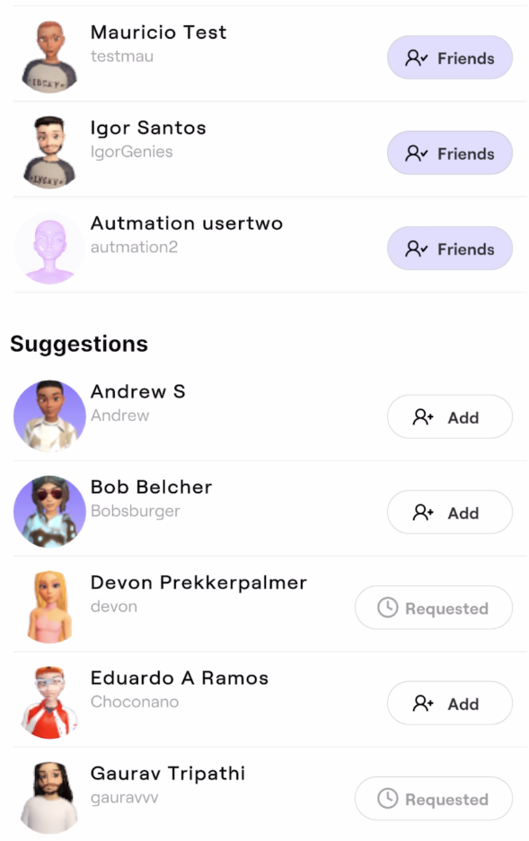
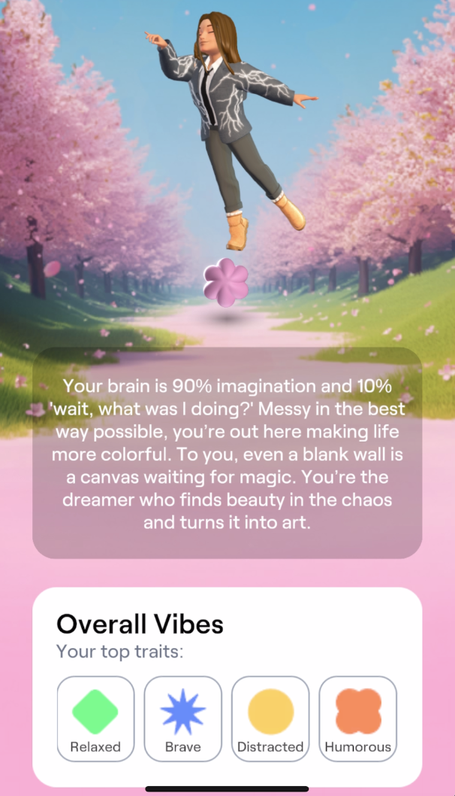
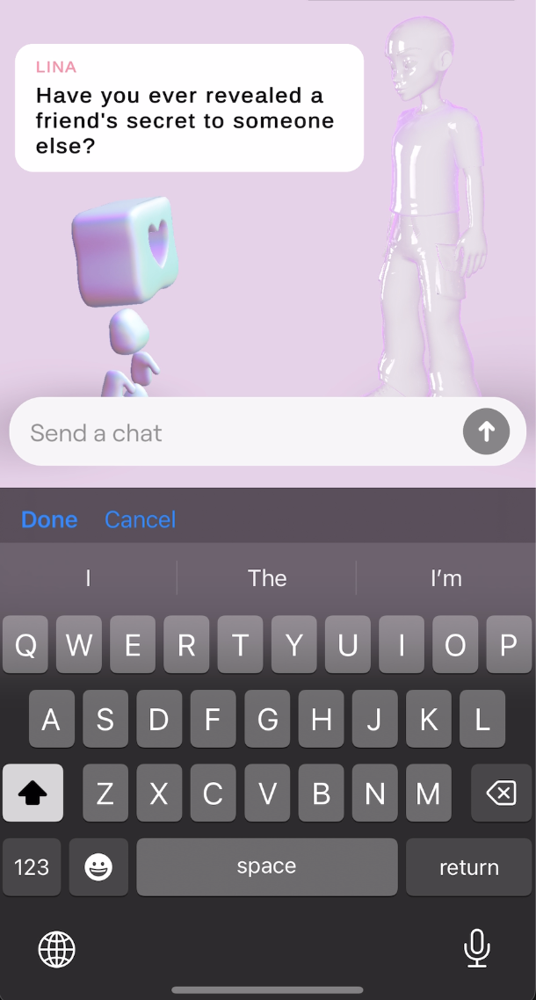
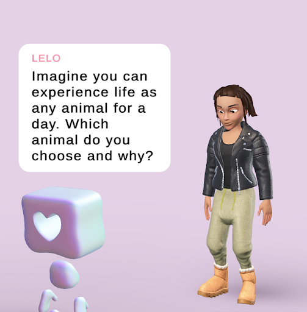
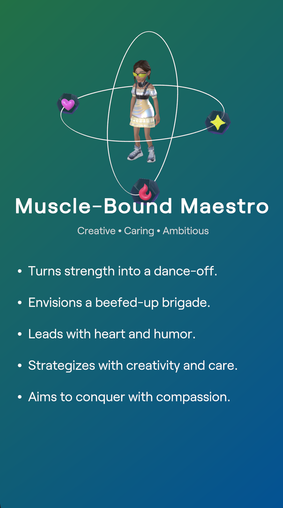
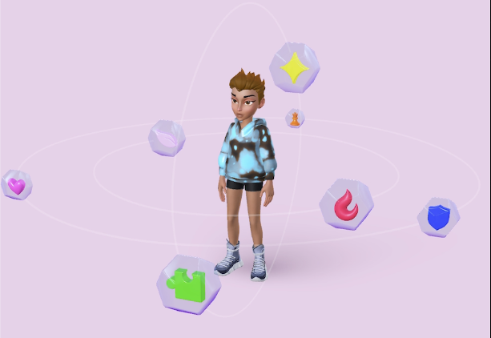

Genies App
Our AI-powered avatar app personalized the entire experience by analyzing your photo gallery, tailoring everything from chat responses and conversation starters to profile data.
Genies Party
This iteration leaned into social. Users joined a feed that prioritized friends and contacts, posted statuses, linked their Spotify accounts, and added idle animations to their spaces. Visiting another space, you could reply to their status, send a friend request, or leave a reaction.


Personality AI
This iteration centered on an LLM companion. Users chatted with an avatar that slowly built a profile of them through conversation.



